June 2026 — Ben, Seamus & Solveig
| Day | Date | Base | Highlights |
|---|---|---|---|
| Pre | Sun Jun 7 | Travel | Drive Moscow → Spokane. Fly GEG → SEA → AMS. |
| 1 | Mon Jun 8 | Ljubljana | Arrive LJU 13:25. Check in. Evening walk: Prešeren Sq, Triple Bridge, Ljubljana Castle. |
| 2 | Tue Jun 9 | Bohinjska Bistrica | Train to Bohinj. Afternoon: Savica Waterfall warm-up hike. |
| 3 | Wed Jun 10 | Bohinjska Bistrica | 🥾 BIG HIKE: Seven Lakes Valley — 20 km, 1,500 m gain. Slovenia's greatest day hike. |
| 4 | Thu Jun 11 | Bohinjska Bistrica | 🇦🇹 AUSTRIA ✔ BOOKED: Train to Villach. Dobratsch hike or town walk. |
| 5 | Fri Jun 12 | Piran | Early train via Nova Gorica. Stop: Škocjan Caves (UNESCO). Arrive Piran ~14:30. |
| 6 | Sat Jun 13 | Piran | 🇮🇹 VENICE ✔ BOOKED: Ferry departs 08:00. Returns 20:00. |
| 7 | Sun Jun 14 | Bovec | ✔ B-Tours van from Piran Bus Station ~10:00. Afternoon: Soča Great Canyon walk. |
| 8 | Mon Jun 15 | Bovec | 🥾 BIG HIKE: Soča Trail — source to Bovec, ~20 km, emerald river all day. |
| 9 | Tue Jun 16 | Bovec | 🥾 BIG HIKE: Lake Krn via Lepena (Krnsko jezero) — taxi from Bovec, 11.7 km, 885 m gain. |
| 10 | Wed Jun 17 | Ljubljana | Bus Bovec → Kobarid (museum + lunch). ✔ Bohinj Railway LP 4214 16:34 → Ljubljana 19:20. |
| 11 | Thu Jun 18 | Ljubljana | Choose: Zagreb day trip by train OR relaxed last day in Ljubljana. Farewell dinner. |
| 12 | Fri Jun 19 | ✈️ Depart | ⚠️ EARLY FLIGHT: DL 9567 departs 06:00. Taxi at 03:30. Home Spokane 15:42. |
| Flight | Carrier | Route | Departs | Arrives | Date |
|---|---|---|---|---|---|
| DL 3824 | SkyWest/Delta | Spokane (GEG) → Seattle (SEA) | 11:19 | 12:47 | Jun 7 |
| DL 142 | Delta | Seattle (SEA) → Amsterdam (AMS) | 13:55 | 08:40 (+1) | Jun 7 |
| DL 9220 | KLM City Hopper | Amsterdam (AMS) → Ljubljana (LJU) | 11:40 | 13:25 | Jun 8 |
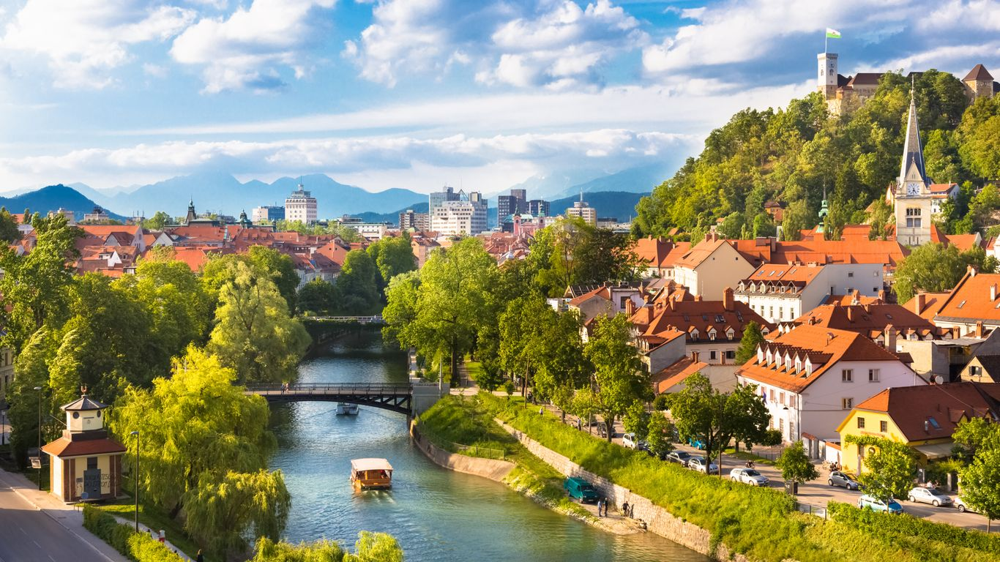
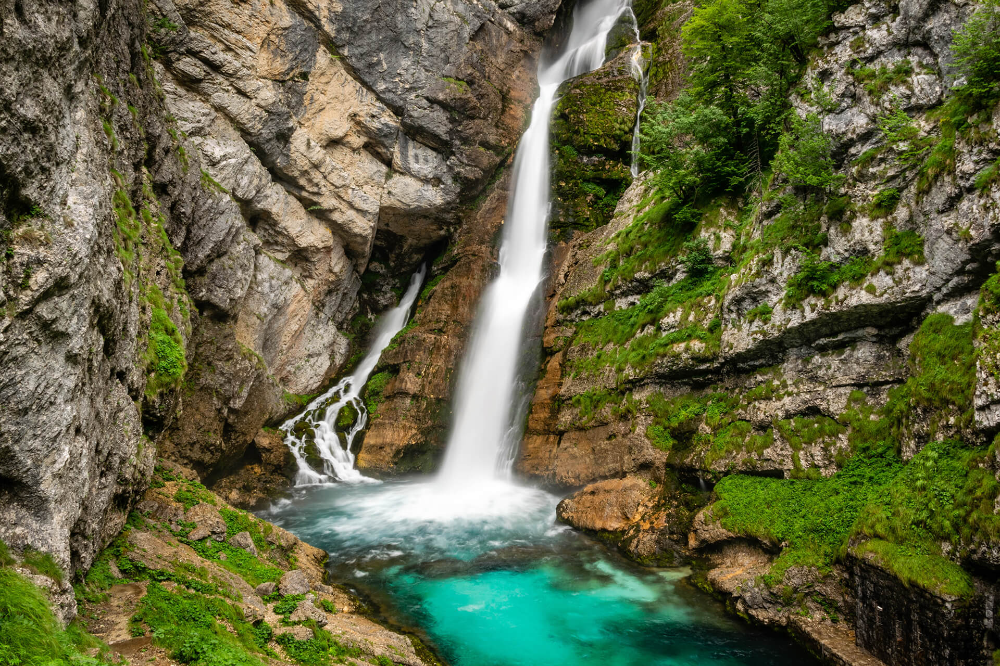
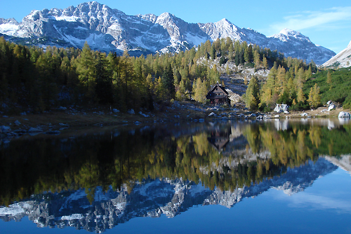
The Seven Lakes Valley (Dolina Triglavskih Jezer) is the signature day hike of the Julian Alps — seven glacial lakes in a dramatic high-alpine cirque. One of the finest days possible in the mountains of Central Europe. 📍 AllTrails map
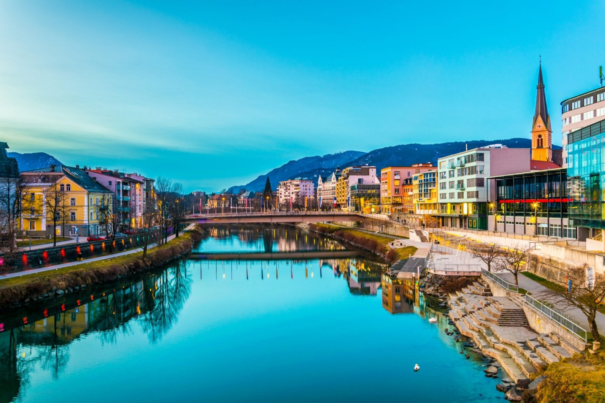
A rest day from big hiking — but a genuinely memorable one. The train crosses the Slovenian-Austrian border through the Karawanken Alps. Villach is a pleasant Carinthian city.
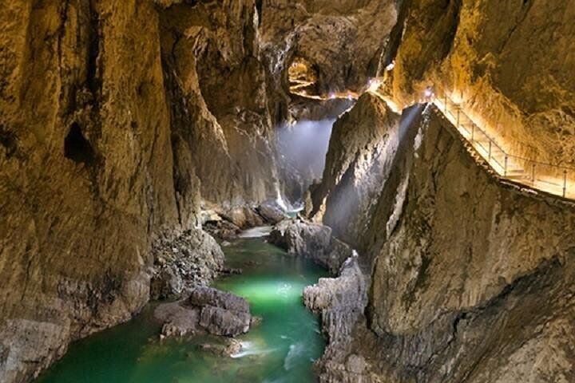
A long travel day with a world-class underground stop built in. Early start required.
A 2-hr guided tour descends into a cathedral-sized underground canyon — one of the largest cave systems in Europe. The tour is genuinely extraordinary. If you only do one cave in your lifetime, make it this one.
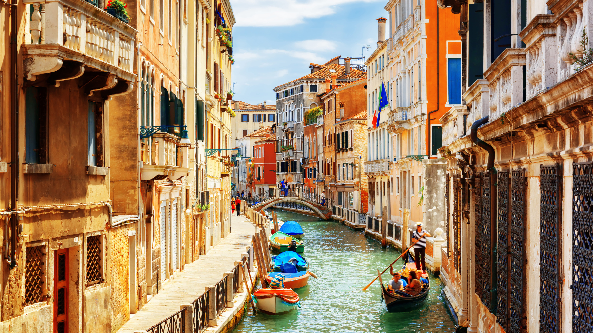
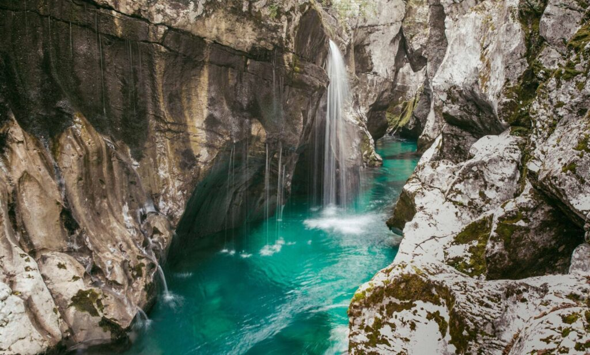
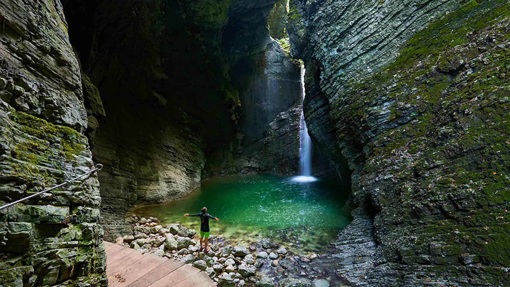
The Soča River is one of Europe's most beautiful rivers — an impossible teal-green fed by glacial melt. The Soča Trail (Soška pot) follows it from source to sea; the upper section from the source to Bovec is the finest stretch.
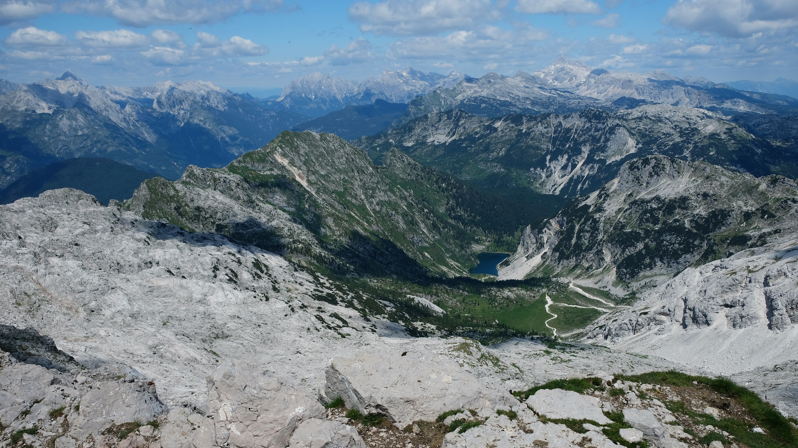
Krnsko jezero is the largest glacial lake in Slovenia, cradled in a high alpine basin beneath Mt Krn — a rewarding out-and-back that trades the strenuous summit push for a beautiful lake.
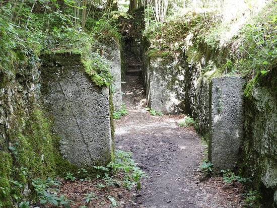
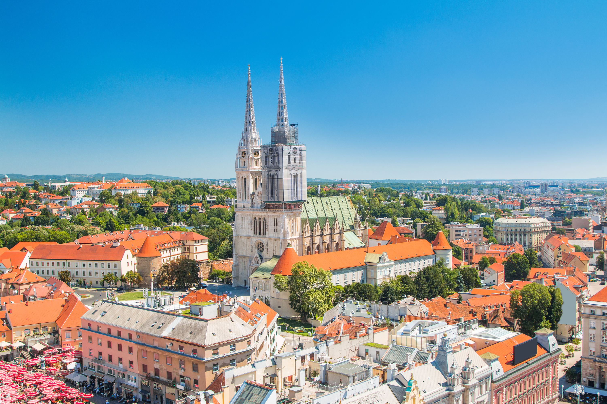
Decide the night before. No advance booking needed — Ljubljana–Zagreb is a fixed €9 second-class fare bought at the station counter on the day. Keep this open and choose based on energy and weather.
📍 Zagreb Highlights
Tonight is your real farewell dinner — plan somewhere special in Ljubljana's old town, whether you're back from Zagreb or wrapping up a relaxed day in the city.
| Flight | Carrier | Route | Departs | Arrives | Date |
|---|---|---|---|---|---|
| DL 9567 | KLM City Hopper | Ljubljana (LJU) → Amsterdam (AMS) | 06:00 | 08:00 | Jun 19 |
| DL 143 | Delta | Amsterdam (AMS) → Seattle (SEA) | 10:20 | 11:37 | Jun 19 |
| DL 4145 | SkyWest/Delta | Seattle (SEA) → Spokane (GEG) | 14:30 | 15:42 | Jun 19 |
Click any marker for details. Use filters to show/hide layers.
Seamus and Solveig should each have their own day packs (20–25 L).
Generally excellent — long days (sunset after 20:30), 20–25 °C (68–77 °F) in valleys, 10–15 °C (50–59 °F) at altitude.